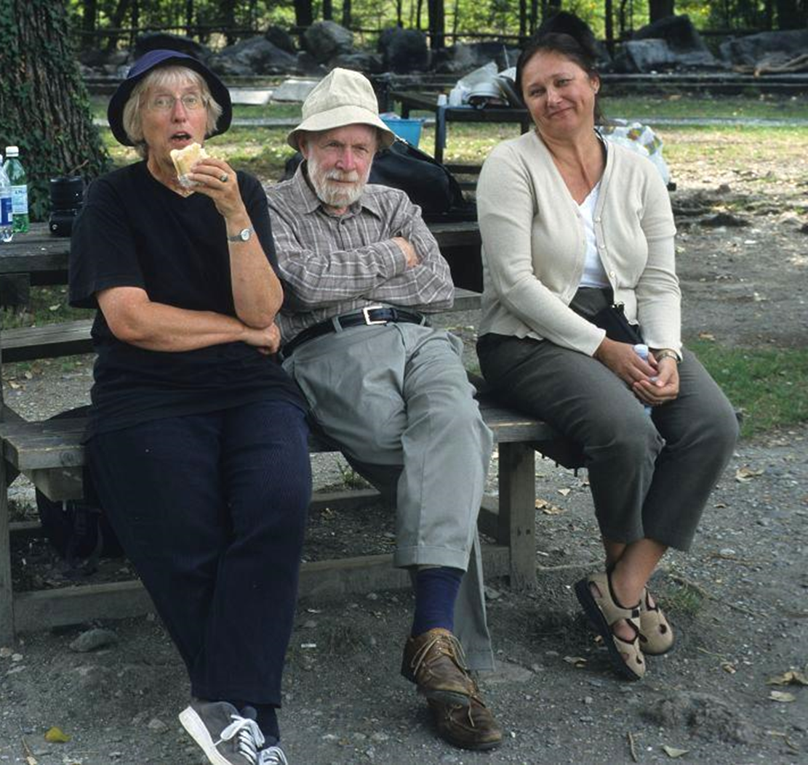

Herb Wright - A Picture Gallery
by Pim van der Knaap and Jacqueline van Leeuwen
We have assembled some pictures of Herb on the Bern International Moor (Bog) Excursions, on his 80th birthday celebration at Wengen (1997), and other trips taken between 1991 and 2003 as record of the many very enjoyable trips we had with Herb in Europe and in Canada.
